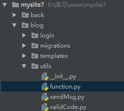
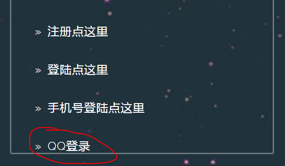
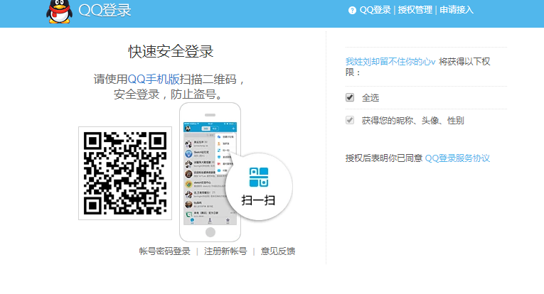
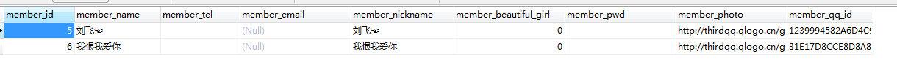

使用qq登录的前提是已经在qq互联官网创建网站应用并获取到QQ互联中网站应用的APP ID和APP KEY
1，建路由
# qq登录
path('loginQq/',qq.loginQq,name='loginQq/'),
path('returns/',qq.returns,name='returns/'),2，前端页面写qq登录的链接，本文没有用图标，暂时使用a链接请求。
<a data-wow-delay=".5s" href="/blog/loginQq/"> » QQ登录</a>3，在项目的应用下创建utils文件夹并创建function.py用于封装函数，封装的函数用于从返回数据中提取openid（腾讯公司数据库里面的用户id）

封装的函数内容如下；
import re
def parse_jsonp(jsonp_str):
try:
return re.search('^[^(]*?\((.*)\)[^)]*$', jsonp_str).group(1)
except:
raise ValueError('无效数据！')4，后台代码
from django.shortcuts import render,redirect,HttpResponse,HttpResponseRedirect
from blog.models import Member
from urllib import parse
from urllib import request as req
import re
import json
import random
from blog.utils import function
def loginQq(request):
state = str(random.randrange(100000,999999)) # 定义一个随机状态码，防止跨域伪造攻击。
request.session['state'] = state # 将随机状态码存入Session，用于授权信息返回时验证。
client_id = '101716344' # QQ互联中网站应用的APP ID。
# 对回调地址进行编码，用户同意授权后将调用此链接。
callback = parse.urlencode({'redirect_uri':'http://127.0.0.1:8000/blog/returns'}) #redirect_uri=http%3A%2F%2F127.0.0.1%3A8000%2Fblog%2Freturns
# 组织QQ第三方登录链接
login_url = 'https://graph.qq.com/oauth2.0/authorize?response_type=code&client_id=%s&%s&state=%s'%(client_id,callback,state)
return HttpResponseRedirect(login_url) # 重定向到QQ第三方登录授权页面
def returns(request):
if request.session['state'] == request.GET['state']: # 验证状态码，防止跨域伪造攻击。
code = request.GET['code'] # 获取用户授权码
client_id = '101716344' # QQ互联中网站应用的APP ID。
client_secret = '7f42aaac69f866750078fbe1edd9d2a4' # QQ互联中网站应用的APP Key。
callback = parse.urlencode({'redirect_uri': 'http://127.0.0.1:8000/blog/returns'})
# 对回调地址进行编码，用户同意授权后将调用此链接。
login_url = 'https://graph.qq.com/oauth2.0/token?grant_type=authorization_code&code=%s&client_id=%s&client_secret=%s&%s' % (code, client_id, client_secret, callback) # 组织获取访问令牌的链接
# return HttpResponse(login_url)
response = req.urlopen(login_url).read().decode() # 打开获取访问令牌的链接 access_token:123456789&
access_token = re.split('&', response)[0] # 获取访问令牌 access_token:123456789
res = req.urlopen('https://graph.qq.com/oauth2.0/me?' + access_token).read().decode() # 打开获取openid的链接
openid = json.loads(function.parse_jsonp(res))['openid'] # 从返回数据中获取openid 410225632333335556566
userinfo = req.urlopen('https://graph.qq.com/user/get_user_info?oauth_consumer_key=%s&openid=%s&%s' % (
client_id, openid, access_token)).read().decode() # 打开获取用户信息的链接
# 打印查看获取到的用户信息
print(userinfo)
userinfo = json.loads(userinfo) # 将返回的用户信息数据（JSON格式）读取为字典。
user = Member.objects.filter(member_qq_id=openid) # 查询是否已存在用户
if not user: # 如果不存在用户
# 创建新用户
member_obj = Member.objects.create(member_qq_id=openid,member_nickname=userinfo['nickname'],member_name=userinfo['nickname'],member_photo = userinfo['figureurl_qq_1'])
# user = Member() # 创建新用户
# user.member_qq_id = openid # 写入用户信息
# user.member_nickname = userinfo['nickname'] # 写入用户信息
# user.member_name = userinfo['nickname'] # 写入用户信息
# # user.gender = userinfo['gender'] # 写入用户信息
# user.member_photo = userinfo['figureurl_qq_1'] # 写入用户信息
# user.save() # 保存或更新用户
request.session['member_id'] = member_obj.member_id # 将已登录的用户openid写入Session
request.session['member_name'] = userinfo['nickname']
# 返回路径至网站首页
return redirect('/blog/index/')
else:
return HttpResponse('授权失败！')本文是在本地测试项目中的qq登录功能，所以qq互联官网中的回调地址需要修改为本地的地址，
5，启动项目测试功能


6，查看数据库会员表，会员信息已写入。

done。